Installation
Voici le lien pour pouvoir télécharger Git
Télécharger Git 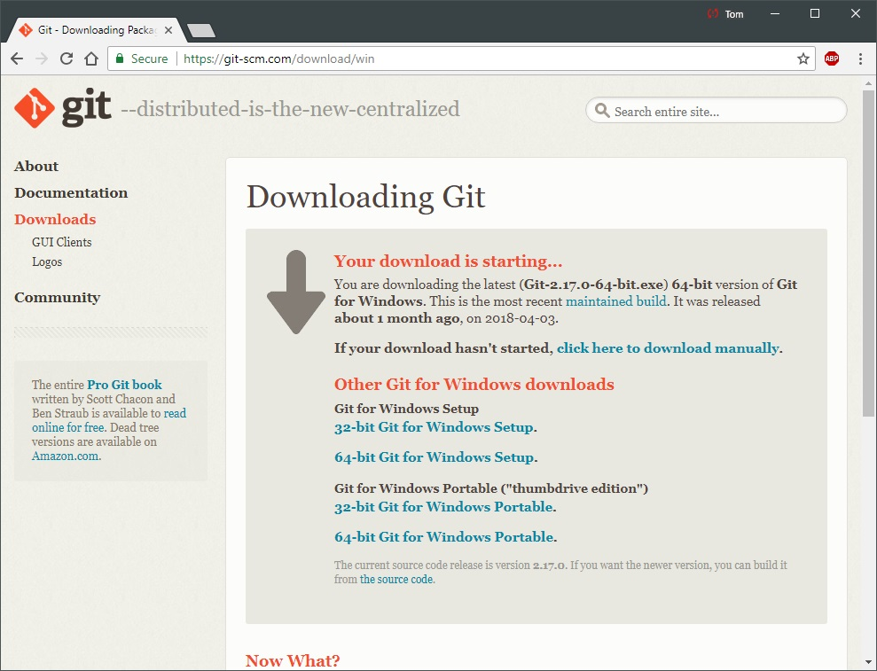Vous pouvez choisir de créer un raccourci sur le bureau
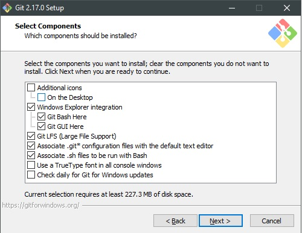À cette étape il est préférable de choisir Notepad ++ vu que depuis le début de la session vous utiliser cet éditeur de texte
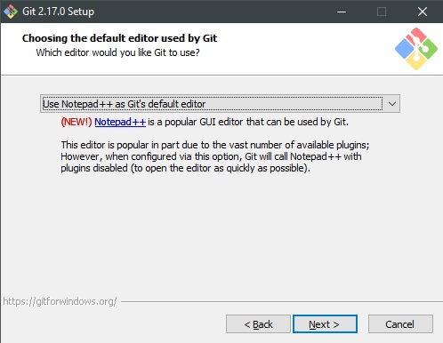Ici il est conseillé d'y aller avec MinTTY car la console de Windows est plus restrictive ( C'est très dur de "scroll back" pour voir l'historique des commandes, Laconsole doit être configurée pour pouvoir utiliser les caractère non ASCII)
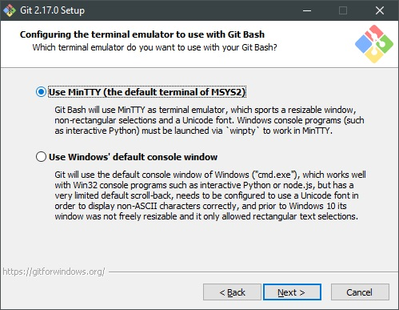Maintenant, clicker sur "Lunch Git bash" pour pouvoir ouvrir la console et commencer à utiliser le programme (Pas besoin d'aller voir les release notes)
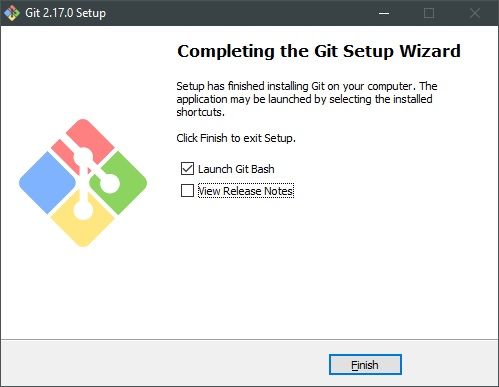Vous devriez avoir une page qui ressemble à ceci :
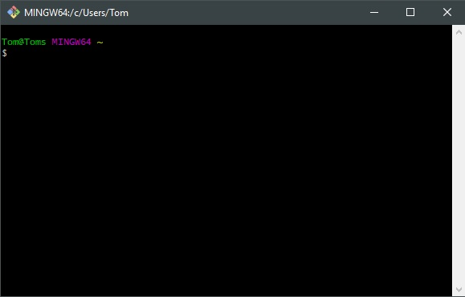À ce moment, nous vous suggérons d'aller changer quelle que configuration de votre "user" afin de mettre votre nom d'utilisateur et votre adresse email au projet que vous allez travailler dessus.
Veuillez taper les commandse qui suivent :
git config --global user.name "Votre Nom"
git config --global user.email "VotreEmail@example.com"
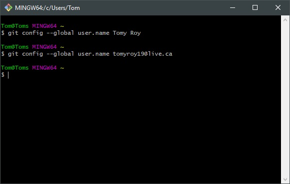Vous pouvez voir si les commandes ont fonctionnées en tapant
git config --global user.name
git config --global user.email
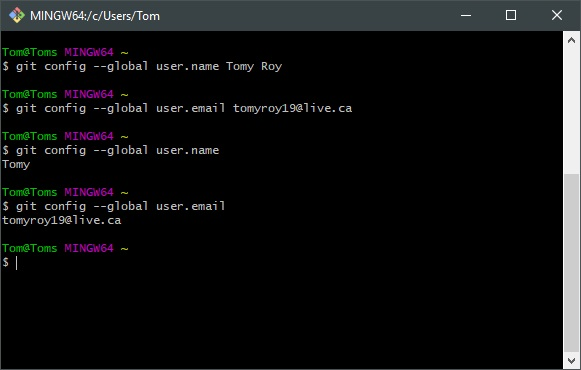Pour avoir de l'aide sur une commande vous n'avez qu'à tapper
git help "La commande"
git help config
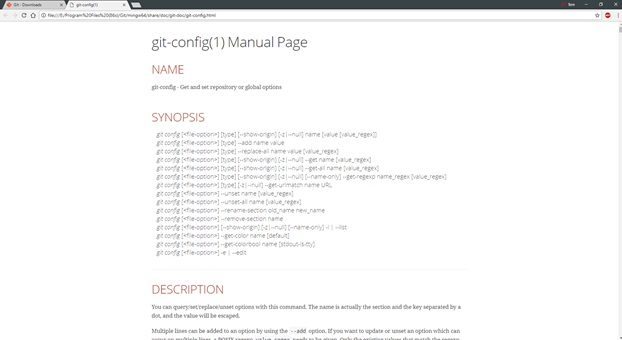et une page HTML va s'ouvrire comme ceci
Il y a deux façons de démarrer un dépôt dans Git. Prendre un dépôt et l'importer dans Git à partir d'un répertoire existant ou de cloner un dépôt qui existe déjà sur un autre serveur
Allons-y ici avec l'importation d'un répertoire existant. Il faut d'abord creer un dossier ou aller dans un dossier existant. Veuillez-vous déplacer pour aller dans le fichier et utiliser la commande init ( Au lieu d'écrire "cd /Utilisateurs/ton-username/InstallationGIT/" nous allons utiliser l'abréviation ~ comme suit)
cd ~/InstallationGIT
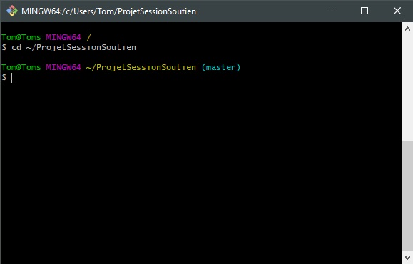Et ensuite on créé le fichier .git qui comporte les configurations nécessaires pour utiliser Git sur ce dossier
git init
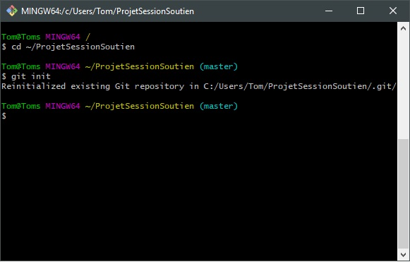Sur votre écran il sera écrit autre chose car moi j'ai déjà créé le dossier .git dans mon dossier de projet.
Exemple :
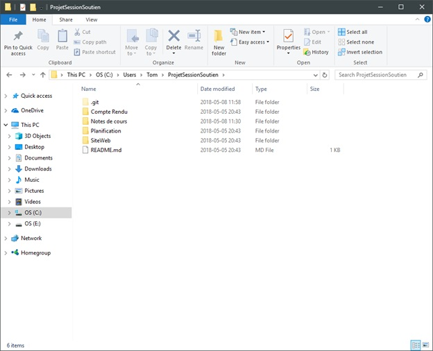Pour cloner un dépôt qui existe déjà on doit utiliser la commande Clone
git clone https://github.com/NoMeta/Test
Cela crée un répertoire au nom du fichier cloner et initialise .git à l'intérieur et clone tous les fichiers inclus dans le projet et les historiques. (Si vous voulez nommer le répertoire autrement on ne dois qu'ajouter le nom de celui-ci après la commande.
git clone https://github.com/NoMeta/Test testprojet
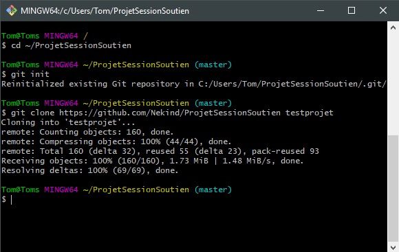Notre nouveau répertoire est maintenant créé
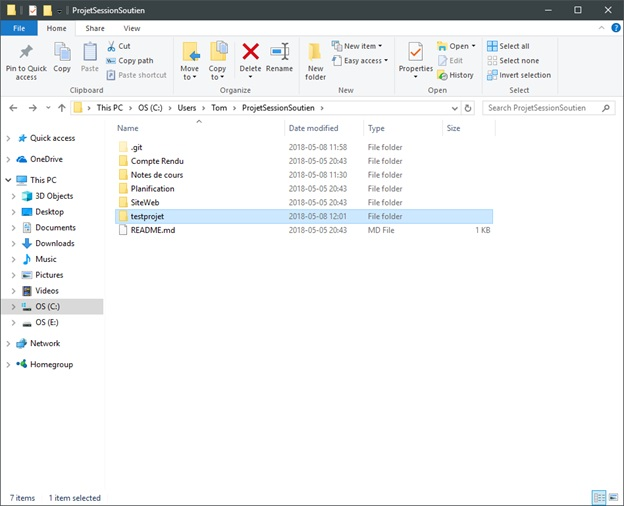Pouvez-vous trouver "l'erreur" qui a été commit ici ?
Quelle commande aurait dû être utilisé avant le clone ?